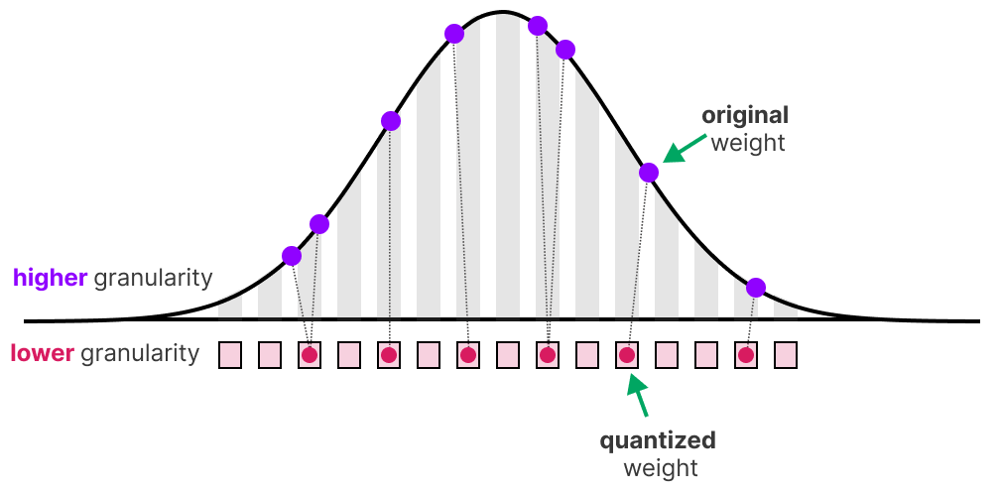

6. Quantization
Goals
At the end of this tutorial you will be able to:
- Use quantization interfaces in
torch_to_nnef - Define your own quantization library on top of
torch_to_nnef
Prerequisite
- PyTorch and Python basics
- Understanding of what is quantization for Neural network
- 10 min to read this page

Quantization is a set of techniques that allow to reduce significantly the model size, and in case of memory-bound computations during model inference: speed up model as well. These techniques reduce the 'size' needed to store the numerical values representing the parameters of the neural network.
In order to make those techniques efficient, the inference engine that runs the neural network needs to have in most cases, specific kernels to support the quantization scheme selected.
torch_to_nnef primary support today being tract, the quantization
presented here are all targeting this inference engine.
Supported formats and lineage
The exporter supports the following tract quantization formats. Payload bpw includes block scales where applicable, but excludes headers and other per-tensor metadata.
| Format and storage | Supported use | Lineage and references |
|---|---|---|
| Q4_0 / Q40: 4.5 bpw, 32 weights per f16 scale | Weight-only quantization for matmul, convolution and embeddings/gather; outputs are floating point. | GGML's block_q4_0: block definitions and reference quantizers. Tract's NNEF layout has version-dependent nibble order. |
| Q8_1: 9 bpw, 32 int8 weights plus f16 scale and sum | Weight-only, embeddings/gather only, tract >= 0.23.0. No matmul or convolution support. | GGML's block_q8_1: block definitions, with tract-specific NNEF item types. |
| Q8_0: 8.5 bpw, 32 int8 weights plus f16 scale | Weight-only, embeddings/gather only, tract >= 0.23.10. No matmul or convolution support. | GGML's block_q8_0: block definitions and reference quantizers. Bytes are written exactly as GGML lays them out. |
Q4_K: 4.5 bpw, 256 weights per super-block (f16 d/dmin, 6-bit sub-block scales and mins) |
Weight-only, embeddings/gather only, tract >= 0.23.10. No matmul or convolution support. | GGML's block_q4_K: block definitions and reference quantizers. Bytes are written exactly as GGML lays them out. |
| Q5_K: 5.5 bpw, 256 weights per super-block (Q4_K header, 5-bit levels) | Weight-only, embeddings/gather only, tract >= 0.23.10. No matmul or convolution support. | GGML's block_q5_K: block definitions and reference quantizers. Bytes are written exactly as GGML lays them out. |
Q6_K: 6.5625 bpw, 256 weights per super-block (f16 d, 16 signed 8-bit sub-block scales, symmetric 6-bit levels) |
Weight-only, embeddings/gather only, tract >= 0.23.10. No matmul or convolution support. | GGML's block_q6_K: block definitions and reference quantizers. Bytes are written exactly as GGML lays them out. |
IQ2_S: 2.5625 bpw, 256 weights per super-block (f16 d, 4-bit group scales, 1024 point grid indices and sign bits per 8 weights) |
Weight-only, embeddings/gather only, tract >= 0.23.10. No matmul or convolution support. | GGML's block_iq2_s: block definitions and reference quantizer and grid. Bytes are written exactly as GGML lays them out. |
| Q2_0_T: 2.5 bpw, 32 ternary weights per f16 scale | Already-ternary weights, including Linear layers; tract >= 0.23.11. Does not insert activation quantization. | Related schemes include BitNet b1.58 and PrismML Ternary Bonsai. Two-bit packing is related to GGML's TQ2_0 family; tract defines the exact layout. |
| Per-tensor affine int8: 8 bits per value, with separate scale/zero point | Weights and activations; supports integer arithmetic in quantized operators. | PyTorch's per-tensor affine quantization API, exported as integer data plus NNEF graph.quant metadata. |
A quantization scheme, its packed tensor layout and its file container are separate choices. GGML defines tensor formats; GGUF and NNEF are containers. In particular, tract's Q2_0_T is not a byte-compatible alias for GGML TQ2_0 or a GGUF Q2_0 payload.
PrismML's Ternary Bonsai is a concrete
model family using the same {-s, 0, +s} alphabet. Its published scheme shares
an FP16 scale over 128 weights. Compatible materialized inference weights can
be split into four tract blocks of 32, each with its own stored scale. This
connects the model's quantization scheme to Q2_0_T without implying that
PrismML's packed formats, compression ratios or kernels are the same as
tract's. See also PrismML's model and runtime repository
for its own export formats and runtimes.
Usage
Q4_0 LLM export example
For LLM as we explained in prior tutorial quantization is as simple as
adding the -c (or --compression-method) option with min_max_q4_0_all.
t2n_export_llm_to_tract \
-s "meta-llama/Llama-3.2-1B-Instruct" \
-dt f16 \
-f32-attn \
-e $HOME/llama32_1B_q40 \
--dump-with-tokenizer-and-conf \
--tract-check-io-tolerance ultra \
-c "min_max_q4_0_all"
It should take around the same time to export (quantization time being compensated by less content to dump on disk).
Ok that's nice, but where does this registry come from ?
The registry location is defined with the --compression-registry which by default
point to:
-
torch_to_nnef.compress.DEFAULT_COMPRESSIONmodule-attributeDEFAULT_COMPRESSION = {'min_max_q4_0': quantize_weights_min_max_Q4_0, 'min_max_q4_0_with_embeddings': partial(quantize_weights_min_max_Q4_0, to_quantize_module_classes=(nn.Linear, nn.Embedding)), 'min_max_q4_0_with_embeddings_99': partial(partial(quantize_weights_min_max_Q4_0, percentile=0.99), to_quantize_module_classes=(nn.Linear, nn.Embedding)), 'min_max_q4_0_all': partial(quantize_weights_min_max_Q4_0, to_quantize_module_classes=(nn.Linear, nn.Embedding, nn.Conv1d, nn.Conv2d)), 'min_max_q8_0_embeddings': quantize_weights_min_max_Q8_0, 'min_max_q8_1_embeddings': quantize_weights_min_max_Q8_1, 'ggml_q4_k_embeddings': quantize_weights_ggml_Q4_K, 'ggml_q5_k_embeddings': quantize_weights_ggml_Q5_K, 'ggml_q6_k_embeddings': quantize_weights_ggml_Q6_K, 'ggml_iq2_s_embeddings': quantize_weights_ggml_IQ2_S}
Defining your own LLM quantization registry
Anyone can create a new registry as long as it follows those rules:
- accessible as a global variable dict
- with as key a string that reference the compression to apply
- as value a function that has the following signature:
def my_quantization_function(
model, # your torch.nn.Module / full model to be quantized
# huggingface tokenizer or equivalent
tokenizer,
# may be usefull to dump compression evaluations results
# or some specific metrics
export_dirpath,
# original trained model location
# may be usefull to perform internal evaluations of reference
# when more data than just llm torch is available
local_dir,
):
pass
A typical function will transform some model tensors (parameters, buffers, ...)
into torch_to_nnef.tensor.QTensor a concrete QTensor that supports NNEF export today being:
-
torch_to_nnef.tensor.quant.qtract.QTensorTractScaleOnlyBases:
QTensorTractScalePerGroupF16Tract data format it serializes to: Q4_0.
Each group of 32 values is stored as 18 bytes: f16 scale, then 32 packed 4bit values.
Methods:
Name Description decompressTract Q4_0 dequantization depends on hardware.
-
torch_to_nnef.tensor.quant.qtract.QTensorTractQ8_1Bases:
QTensorTractScalePerGroupF16Tract data format it serializes to: Q8_1 (GGML style).
Each group of 32 values is stored as 36 bytes: f16 scale, f16 sum of dequantized values, then 32 int8.
Warning
tract (<= 0.23.10) only supports Q8_1 weights in embedding/gathering operations: there is no matmul or convolution kernel for it yet.
-
torch_to_nnef.tensor.quant.qtract_ggml.QTensorTractQ8_0Bases:
QTensorTractScalePerGroupF16Tract data format it serializes to: Q8_0 (ggml
block_q8_0).Each group of 32 values is stored as 34 bytes: f16 scale
d, then 32 int8 (8.5bpw). Value isd * q.Use
fp_to_tract_q8_0_with_min_max_calibrationto construct it: quantization matches llama.cppquantize_row_q8_0_refbytes, dequantization matches tract bit exactly. External calibrations provide their scales with aQScaleQ8_0.Warning
tract (<= 0.23.10) only supports Q8_0 weights in embedding/gathering operations: there is no matmul or convolution kernel for it yet. Export requires tract >= 0.23.10; older targets warn and are rejected.
-
torch_to_nnef.tensor.quant.qtract_ggml.QTensorTractQ4_KBases:
QTensorTractGGMLKMinTract data format it serializes to: Q4_K (ggml
block_q4_K).Each super-block of 256 values is stored as 144 bytes: f16
d, f16dmin, 12 bytes of eight 6bit scales and mins (one per sub-block of 32 values), then 256 4bit levels (4.5bpw). Value isd * scale * level - dmin * min.Quantization ports llama.cpp
quantize_row_q4_K_ref(no importance matrix), dequantization matches tract bit exactly.Warning
tract (<= 0.23.10) only supports Q4_K weights in embedding/gathering operations: there is no matmul or convolution kernel for it yet.
-
torch_to_nnef.tensor.quant.qtract_ggml.QTensorTractQ5_KBases:
QTensorTractGGMLKMinTract data format it serializes to: Q5_K (ggml
block_q5_K).Each super-block of 256 values is stored as 176 bytes: f16
d, f16dmin, 12 bytes of eight 6bit scales and mins (one per sub-block of 32 values), 32 bytes of level high bits, then 256 low 4bit levels (5.5bpw). Value isd * scale * level - dmin * minwith 5bit levels.Quantization ports llama.cpp
quantize_row_q5_K_ref(no importance matrix), dequantization matches tract bit exactly.Warning
tract (<= 0.23.10) only supports Q5_K weights in embedding/gathering operations: there is no matmul or convolution kernel for it yet.
-
torch_to_nnef.tensor.quant.qtract_ggml.QTensorTractQ6_KBases:
QTensorTractGGMLKTract data format it serializes to: Q6_K (ggml
block_q6_K).Each super-block of 256 values is stored as 210 bytes: 128 bytes of low 4 bits and 64 bytes of high 2 bits of 256 6bit levels, sixteen i8 scales (one per sub-block of 16 values), then f16
d(6.5625bpw). It is symmetric: value isd * scale * (level - 32).Quantization ports llama.cpp
quantize_row_q6_K_ref(no importance matrix), dequantization matches tract bit exactly.Warning
tract (<= 0.23.10) only supports Q6_K weights in embedding/gathering operations: there is no matmul or convolution kernel for it yet.
-
torch_to_nnef.tensor.quant.qtract_ggml.QTensorTractIQ2_SBases:
QTensorTractGGMLKTract data format it serializes to: IQ2_S (ggml
block_iq2_s).Each super-block of 256 values is stored as 82 bytes (2.5625bpw): f16
d, 32 low grid index bytes then 32 sign bytes (one per octet of 8 values), 8 bytes of 2bit high grid index parts, then sixteen 4bit scales (one per group of 16 values). Each octet is a point of the ggml 1024 entrieskgrid_2bit_1024grid (magnitudes in {8, 25, 43}), value isd * (0.5 + scale) * 0.25 * magnitude * sign.Its u8 storage holds one code per value (grid level and sign, see
QScaleGGMLIQ2S), grid indices are only looked up when written.Quantization ports llama.cpp
quantize_row_iq2_s_refwithout importance matrix (grid nearest neighbour search with a weighted scale fit, about 2s per 16384 super-blocks on CPU), dequantization matches tract bit exactly.Warning
tract (<= 0.23.10) only supports IQ2_S weights in embedding/gathering operations: there is no matmul or convolution kernel for it yet.
The format overview lists the available weight formats and their supported operations.
A QTensor is a Python object that behaves and should be used as a
classical torch.Tensor with few exceptions: it can not hold any gradient, it can not be modified, it contains internals objects necessary to its definition like:
- A blob of binary data (the compressed information) named
u8_blob - A
torch_to_nnef.tensor.quant.Qschemewhich define how to quantize/ dequantize the blob from u8 (like QScalePerGroupF16) - A list of U8Compressor that can act on the u8 blob and compress it further by for example applying bit-packing to it. Say each represented element is specified in 4 bit (16 value represented) without compressor we waste 4 bit per element because each element take 8bit (here we ignore the attached quantization information that add up to the size). Also Compressor are not necessary just bit-packing that can be any kind of classical compression algorithm (Huffman, Lzma, ...) as long as the compression is lossless.
Each access to the QTensor for torch operations will make it be decompressed on the fly saving RAM allocation when unused. This QTensor will also be identified by torch_to_nnef at export time and translated to requested .dat based on the specific method:
def write_in_file(
self,
dirpath: T.Union[str, Path],
label: str,
inference_target: InferenceTarget = TractNNEF.latest(),
):
pass
Each subclass will define how to dump it (for example for tract Q40).
The transformation from a float tensor to a Q40 QTensor can be done through
a step we call tensor quantization which may be as simple as
a min and max calibration as shown in the function fp_to_tract_q4_0_with_min_max_calibration, but all compatible techniques can be applied like GPTQ, AWQ, ...
(those are just not part of torch_to_nnef package which intend to just provide common primitive to be easily exportable).
A concrete example of my_quantization_function can be found compress module here.
Today Q40 is supported by tract on matmul, convolutions and embeddings operations.
The min_max_q4_0_all will try to apply it to all those encountered modules within a
model.
Q4_0 for other networks
By reading the previous section you should now understand that beyond specific calibration which is not part of this library all of what was explained apply to all neural network parameters used in matmul (nn.Linear, F.linear, ...), conv (Conv1d, Conv2d), and embeddings (gather operator). In fact you can just reuse as is the compress method we referenced upper on any neural network defined in PyTorch it should just work.
Supported weight quantization formats
Q4_0 block layout
Q40 (Q4_0) stores 32 weights per block: an f16 scale s and 32 four-bit
codes c[i] in [0, 15]. Reconstruction is w[i] = s * (c[i] - 8);
the scale can be negative. The fixed offset of 8 is implicit, not stored.
The block occupies 18 bytes, or (16 + 32 * 4) / 32 = 4.5 bpw.
flowchart LR
accTitle: Q4_0 block layout
accDescr: After the NNEF tensor header, each block stores an f16 scale in bytes 0 and 1 and 32 four-bit codes in bytes 2 through 17. Each packed byte pairs codes 16 weights apart.
subgraph block["32 weights / 18 bytes / 4.5 bpw"]
direction LR
scale["Bytes 0-1<br/>f16 scale"]
first["Byte 2<br/>c0 + c16"]
middle["Bytes 3-16<br/>c1 + c17 ... c14 + c30"]
last["Byte 17<br/>c15 + c31"]
scale --- first --- middle --- last
endInside byte 2, from most significant to least significant bits:
flowchart LR
accTitle: Q4_0 nibble order in byte 2
accDescr: Bits 7 through 4 contain code 16; bits 3 through 0 contain code 0.
high["Bits 7-4<br/>c16"] --- low["Bits 3-0<br/>c0"]| Code | 0 | 8 | 15 |
|---|---|---|---|
| Reconstructed weight | -8 * s |
0 |
7 * s |
The paired codes are 16 weights apart, not adjacent: for example, c0 = 2
and c16 = 9 produce 0x92. This is the layout for tract >= 0.21.11
(item type 0x3040). For older tract targets, the exporter uses the legacy
0x2040 layout: byte 2 pairs c0 in its low nibble with c1 in its high
nibble, byte 3 pairs c2 with c3, and so on. The scale and bpw are unchanged.
Q8_1 for embeddings
tract (>= 0.23.0) can also load Q8_1 weights: each group of 32 elements is stored
as a f16 scale, a f16 sum of the dequantized values and 32 int8 values (9bpw).
Scale follows the GGML convention d = absmax / 127 (int8 values in [-127, 127]).
flowchart LR
accTitle: Q8_1 block layout
accDescr: Each block stores an f16 scale in bytes 0 and 1, an f16 sum in bytes 2 and 3, and 32 signed integer codes in bytes 4 through 35.
subgraph block["32 weights / 36 bytes / 9 bpw"]
direction LR
scale["Bytes 0-1<br/>f16 scale"]
sum["Bytes 2-3<br/>f16 sum"]
codes["Bytes 4-35<br/>q0, q1, ... q31<br/>One signed int8 per byte"]
scale --- sum --- codes
endOne code occupies a full byte, using two's complement:
| Byte (hex) | 81 |
ff |
00 |
01 |
7f |
|---|---|---|---|---|---|
| Code | -127 | -1 | 0 | +1 | +127 |
| Weight | -127 * d |
-d |
0 |
+d |
127 * d |
Reconstruction is w[i] = d * q[i]. The stored sum is d * sum(q[i]),
rounded to f16 and clamped to its finite range on overflow. Tract's embedding
reader uses the scale and codes, not this sum, but it remains part of the
layout: (16 + 16 + 32 * 8) / 32 = 9 bpw. There is no nibble packing or
stored zero point, and the exporter does not emit the int8 code -128.
The NNEF item type is 0x3081 for tract >= 0.23.10 and 0x3080 for older
targets. This version choice matters: newer tract assigns 0x3080 to Q8_0,
which has a different layout without the sum field.
Warning
tract has no matmul or convolution kernel for Q8_1 weights yet: a nn.Linear
or nn.Conv* with Q8_1 weights will fail at tract model optimization.
Only use it for embeddings (gather operator).
This makes it a good fit for embeddings that you want to keep with a better precision than Q40,
the min_max_q8_1_embeddings registry entry quantizes only nn.Embedding weights
(weights tied with other modules like an LLM lm_head are left in float, so pick
a model with untied embeddings like Qwen2.5 7B):
t2n_export_llm_to_tract \
-s "Qwen/Qwen2.5-7B-Instruct" \
-dt f16 \
-e $HOME/qwen25_7B_q81_embeddings \
-c "min_max_q8_1_embeddings"
Or directly on a tensor with fp_to_tract_q8_1_with_min_max_calibration:
from torch_to_nnef.tensor.quant import fp_to_tract_q8_1_with_min_max_calibration
with torch.no_grad():
embedding.weight = nn.Parameter(
fp_to_tract_q8_1_with_min_max_calibration(embedding.weight),
requires_grad=False,
)
Q8_0 for embeddings
tract (>= 0.23.10) can also load GGML Q8_0 weights: each group of 32 elements
is stored as a f16 scale and 32 int8 values (8.5bpw), like Q8_1 without the
sum field. Scale follows the GGML convention d = absmax / 127 (int8 values in
[-127, 127]). The quantizer is a port of GGML's reference
quantize_row_q8_0_ref, as in tract: it reproduces GGML's bytes, and the
exported dequantization matches tract bit exactly.
flowchart LR
accTitle: Q8_0 block layout
accDescr: Each block stores an f16 scale in bytes 0 and 1, and 32 signed integer codes in bytes 2 through 33.
subgraph block["32 weights / 34 bytes / 8.5 bpw"]
direction LR
scale["Bytes 0-1<br/>f16 scale"]
codes["Bytes 2-33<br/>q0, q1, ... q31<br/>One signed int8 per byte"]
scale --- codes
endOne code occupies a full byte, using two's complement:
| Byte (hex) | 81 |
ff |
00 |
01 |
7f |
|---|---|---|---|---|---|
| Code | -127 | -1 | 0 | +1 | +127 |
| Weight | -127 * d |
-d |
0 |
+d |
127 * d |
Reconstruction is w[i] = d * q[i], computed in f32 then cast to the weight
dtype. Codes are round(x[i] / d) (half away from zero) with d in f32,
while the stored d is rounded to f16 (positive from the min max calibration).
Scales from an external calibration (like GPTQ) are given with a QScaleQ8_0
qscheme: blocks whose stored d is not the f16 rounded absmax / 127 of their
weights are quantized with the stored d itself. The block occupies 34 bytes:
(16 + 32 * 8) / 32 = 8.5 bpw. There is no nibble packing, stored zero point
or sum, and the int8 code -128 is never emitted.
The NNEF item type is 0x3080, the item type older tract assigns to Q8_1:
DatBinHeader.TractCustomTypes.Q80 and Q81_LEGACY are the same header value.
Warning
tract has no matmul or convolution kernel for Q8_0 weights yet: a nn.Linear
or nn.Conv* with Q8_0 weights will fail at tract model optimization.
Only use it for embeddings (gather operator).
The min_max_q8_0_embeddings registry entry quantizes only nn.Embedding weights
(weights tied with other modules like an LLM lm_head are left in float, so pick
a model with untied embeddings like Qwen2.5 7B):
t2n_export_llm_to_tract \
-s "Qwen/Qwen2.5-7B-Instruct" \
-dt f16 \
-e $HOME/qwen25_7B_q80_embeddings \
-c "min_max_q8_0_embeddings"
Or directly on a tensor with fp_to_tract_q8_0_with_min_max_calibration:
from torch_to_nnef.tensor.quant import fp_to_tract_q8_0_with_min_max_calibration
with torch.no_grad():
embedding.weight = nn.Parameter(
fp_to_tract_q8_0_with_min_max_calibration(embedding.weight),
requires_grad=False,
)
The input must be a nonempty, finite, floating tensor (f32, f16 or bf16, always
quantized from f32) of rank 2 to 4, with the product of dimensions after the
first divisible by 32. Block scales that overflow f16 (absmax / 127 > 65504)
are rejected. Nonzero blocks whose scale underflows f16 dequantize to zeros:
they are kept with a warning when their weights are negligible against the
tensor largest one (below f16 precision of it), and rejected otherwise. With
percentile < 1, each block is first
clamped to that percentile of its absolute values. Streaming export and tensor
offloading are supported.
Requires tract 0.23.10 or newer
Q8_0 export is rejected for older targets, including prerelease builds
below 0.23.10, since they read item type 0x3080 as Q8_1. Both normal and
offloaded exports emit an explicit warning before failing, and no tensor
data is written.
Q4_K for embeddings
tract (>= 0.23.10) can also load GGML Q4_K weights. Each super-block of 256
weights is split into 8 sub-blocks of 32 weights. The super-block stores two
f16 scales, d and dmin, and each sub-block j stores a 6-bit scale sc[j]
and a 6-bit min m[j], relative to d and dmin. Each weight has an unsigned
4-bit level q[i] in [0, 15]:
The min term gives each sub-block an asymmetric range. The quantizer is a port
of GGML's reference quantize_row_q4_K_ref (a make_qkx2_quants search per
sub-block, without importance matrix): on CPU it reproduces GGML's bytes
(as built without floating point contraction, -ffp-contract=off), and the
exported dequantization matches tract bit exactly.
flowchart LR
accTitle: Q4_K super-block layout
accDescr: After the NNEF tensor header, each super-block stores an f16 d in bytes 0 and 1, an f16 dmin in bytes 2 and 3, eight packed 6-bit scales and mins in bytes 4 through 15, and 256 four-bit levels in bytes 16 through 143.
subgraph block["256 weights / 144 bytes / 4.5 bpw"]
direction LR
d["Bytes 0-1<br/>f16 d"]
dmin["Bytes 2-3<br/>f16 dmin"]
scales["Bytes 4-15<br/>8 x 6-bit scales<br/>8 x 6-bit mins"]
levels["Bytes 16-143<br/>256 x 4-bit levels<br/>4 chunks of 32 bytes"]
d --- dmin --- scales --- levels
endInside the 12 bytes of scales and mins, sub-blocks 0 to 3 use 6 contiguous bits, sub-blocks 4 to 7 are split across bytes:
| Block bytes | High bits | Low bits |
|---|---|---|
| 4-7 | Bits 7-6: bits 5-4 of sc[4..7] |
Bits 5-0: sc[0..3] |
| 8-11 | Bits 7-6: bits 5-4 of m[4..7] |
Bits 5-0: m[0..3] |
| 12-15 | Bits 7-4: bits 3-0 of m[4..7] |
Bits 3-0: bits 3-0 of sc[4..7] |
Byte 4 + k of each row pairs sub-blocks k and k + 4: for example
byte 4 holds sc[0] and the two high bits of sc[4].
Levels: each 32-byte chunk p (bytes 16 + 32 * p onwards) covers 64
weights, sub-blocks 2p and 2p + 1. Byte i of the chunk stores weight
64p + i in its low nibble and weight 64p + 32 + i in its high nibble:
flowchart LR
accTitle: Q4_K nibble order in byte 16
accDescr: Bits 7 through 4 contain level 32; bits 3 through 0 contain level 0.
high["Bits 7-4<br/>q32"] --- low["Bits 3-0<br/>q0"]| Level | 0 | 15 |
|---|---|---|
Weight in sub-block j |
-dmin * m[j] |
15 * d * sc[j] - dmin * m[j] |
For example, q0 = 2 and q32 = 9 produce byte 16 = 0x92. As in Q4_0,
paired levels are not adjacent: here they are 32 weights apart. The super-block
occupies 144 bytes: (16 + 16 + 16 * 6 + 256 * 4) / 256 = 4.5 bpw, the same
payload as Q4_0 but with 6-bit sub-block scales and mins instead of one f16
scale per 32 weights. The NNEF item type is 0x3140.
Warning
tract has no matmul or convolution kernel for Q4_K weights yet: a nn.Linear
with Q4_K weights fails at tract model optimization (no suitable kernel).
Only use it for embeddings (gather operator).
The ggml_q4_k_embeddings registry entry quantizes only nn.Embedding weights
(weights tied with other modules like an LLM lm_head are left in float, so pick
a model with untied embeddings like Qwen2.5 7B, whose 3584 wide rows are a
multiple of 256):
t2n_export_llm_to_tract \
-s "Qwen/Qwen2.5-7B-Instruct" \
-dt f16 \
-e $HOME/qwen25_7B_q4k_embeddings \
-c "ggml_q4_k_embeddings"
Or directly on a tensor with fp_to_tract_q4_k:
from torch_to_nnef.tensor.quant import fp_to_tract_q4_k
with torch.no_grad():
embedding.weight = nn.Parameter(
fp_to_tract_q4_k(embedding.weight), requires_grad=False
)
The input must be a nonempty, finite, floating tensor (f32, f16 or bf16, always quantized from f32) of rank 2 to 4, with the product of dimensions after the first divisible by 256: embeddings of other widths (like 896 or 1152) are left in float with an error log. Super-block scales that overflow f16 are rejected. Nonzero super-blocks whose scales underflow f16 dequantize to zeros: they are kept with a warning when their weights are negligible against the tensor largest one (below f16 precision of it), and rejected otherwise. Streaming export and tensor offloading are supported.
Requires tract 0.23.10 or newer
Q4_K export is rejected for older targets, including prerelease builds below 0.23.10. Both normal and offloaded exports emit an explicit warning before failing, and no tensor data is written.
Q5_K for embeddings
tract (>= 0.23.10) can also load GGML Q5_K weights, the 5-bit sibling of
Q4_K. The super-block of 256 weights keeps the same 8 sub-blocks of 32
weights, the same f16 d and dmin, and the same 6-bit sub-block scales
sc[j] and mins m[j], but each weight has an unsigned 5-bit level q[i] in
[0, 31]:
The quantizer is a port of GGML's reference quantize_row_q5_K_ref (a
make_qkx2_quants search per sub-block, without importance matrix): on CPU it
reproduces GGML's bytes (as built without floating point contraction,
-ffp-contract=off), and the exported dequantization matches tract bit
exactly.
flowchart LR
accTitle: Q5_K super-block layout
accDescr: After the NNEF tensor header, each super-block stores an f16 d in bytes 0 and 1, an f16 dmin in bytes 2 and 3, eight packed 6-bit scales and mins in bytes 4 through 15, the fifth bit of the 256 levels in bytes 16 through 47, and the 256 low 4-bit levels in bytes 48 through 175.
subgraph block["256 weights / 176 bytes / 5.5 bpw"]
direction LR
d["Bytes 0-1<br/>f16 d"]
dmin["Bytes 2-3<br/>f16 dmin"]
scales["Bytes 4-15<br/>8 x 6-bit scales<br/>8 x 6-bit mins"]
qh["Bytes 16-47<br/>256 x 1 high bit"]
ql["Bytes 48-175<br/>256 x 4-bit low levels<br/>4 chunks of 32 bytes"]
d --- dmin --- scales --- qh --- ql
endScales and mins (block bytes 4 to 15) are packed exactly like Q4_K.
Low levels: as in Q4_K, each 32-byte chunk p (bytes 48 + 32 * p
onwards) covers 64 weights, sub-blocks 2p and 2p + 1. Byte i of the chunk
stores bits 3-0 of q[64p + i] in its low nibble and bits 3-0 of
q[64p + 32 + i] in its high nibble.
High bits: byte i of qh (block byte 16 + i) gathers bit 4 of the 8
levels at position i of each sub-block. Bit 2p holds the one of
q[64p + i] and bit 2p + 1 the one of q[64p + 32 + i]:
flowchart LR
accTitle: Q5_K high bits order in byte 16
accDescr: Bits 7 and 6 contain the high bits of levels 224 and 192, bits 5 and 4 of levels 160 and 128, bits 3 and 2 of levels 96 and 64, bits 1 and 0 of levels 32 and 0.
b76["Bits 7-6<br/>q224, q192"] --- b54["Bits 5-4<br/>q160, q128"] --- b32["Bits 3-2<br/>q96, q64"] --- b10["Bits 1-0<br/>q32, q0"]| Block bytes | Content |
|---|---|
| 16-47 | Byte 16 + i, bit 2p + h: bit 4 of q[64p + 32h + i] |
| 48-175 | Byte 48 + 32p + i: bits 3-0 of q[64p + i] (low nibble), of q[64p + 32 + i] (high nibble) |
| Level | 0 | 31 |
|---|---|---|
Weight in sub-block j |
-dmin * m[j] |
31 * d * sc[j] - dmin * m[j] |
For example, q0 = 18 (0b10010) and q32 = 9 (0b01001) produce byte
48 = 0x92 and set bit 0 of byte 16, bit 1 staying clear. The super-block
occupies 176 bytes: (16 + 16 + 16 * 6 + 256 * 5) / 256 = 5.5 bpw, one more
bit per weight than Q4_K. The NNEF item type is 0x3150.
Warning
tract has no matmul or convolution kernel for Q5_K weights yet: a nn.Linear
with Q5_K weights fails at tract model optimization (no suitable kernel).
Only use it for embeddings (gather operator).
The ggml_q5_k_embeddings registry entry quantizes only nn.Embedding weights
(weights tied with other modules like an LLM lm_head are left in float, so pick
a model with untied embeddings like Qwen2.5 7B, whose 3584 wide rows are a
multiple of 256):
t2n_export_llm_to_tract \
-s "Qwen/Qwen2.5-7B-Instruct" \
-dt f16 \
-e $HOME/qwen25_7B_q5k_embeddings \
-c "ggml_q5_k_embeddings"
Or directly on a tensor with fp_to_tract_q5_k:
from torch_to_nnef.tensor.quant import fp_to_tract_q5_k
with torch.no_grad():
embedding.weight = nn.Parameter(
fp_to_tract_q5_k(embedding.weight), requires_grad=False
)
The input must be a nonempty, finite, floating tensor (f32, f16 or bf16, always quantized from f32) of rank 2 to 4, with the product of dimensions after the first divisible by 256: embeddings of other widths (like 896 or 1152) are left in float with an error log. Super-block scales that overflow f16 are rejected. Nonzero super-blocks whose scales underflow f16 dequantize to zeros: they are kept with a warning when their weights are negligible against the tensor largest one (below f16 precision of it), and rejected otherwise. Streaming export and tensor offloading are supported.
Requires tract 0.23.10 or newer
Q5_K export is rejected for older targets, including prerelease builds below 0.23.10. Both normal and offloaded exports emit an explicit warning before failing, and no tensor data is written.
Q6_K for embeddings
tract (>= 0.23.10) can also load GGML Q6_K weights. Each super-block of 256
weights is split into 16 sub-blocks of 16 weights. The super-block stores one
f16 scale d, and each sub-block j stores a signed 8-bit scale sc[j],
relative to d. Each weight has a 6-bit level q[i] in [0, 63]:
The format is symmetric: there is no min term, the signed level q[i] - 32
lies in [-32, 31]. The quantizer is a port of GGML's reference
quantize_row_q6_K_ref (a make_qx_quants search per sub-block, without
importance matrix): on CPU it reproduces GGML's bytes (as built without
floating point contraction, -ffp-contract=off), and the exported
dequantization matches tract bit exactly.
flowchart LR
accTitle: Q6_K super-block layout
accDescr: After the NNEF tensor header, each super-block stores the low 4 bits of 256 levels in bytes 0 through 127, their high 2 bits in bytes 128 through 191, sixteen signed 8-bit sub-block scales in bytes 192 through 207, and an f16 d in bytes 208 and 209.
subgraph block["256 weights / 210 bytes / 6.5625 bpw"]
direction LR
ql["Bytes 0-127<br/>ql: 256 x low 4 bits<br/>2 halves of 64 bytes"]
qh["Bytes 128-191<br/>qh: 256 x high 2 bits<br/>2 halves of 32 bytes"]
scales["Bytes 192-207<br/>16 x i8 scales"]
d["Bytes 208-209<br/>f16 d"]
ql --- qh --- scales --- d
endLevels: each 6-bit level is split into its low 4 bits (in ql) and its
high 2 bits (in qh). Weights are processed in 2 halves h of 128 weights.
For i in [0, 31], with b = 128h + i:
| Block byte | High bits | Low bits |
|---|---|---|
ql: 64h + i |
Bits 7-4: bits 3-0 of q[b + 64] |
Bits 3-0: bits 3-0 of q[b] |
ql: 64h + 32 + i |
Bits 7-4: bits 3-0 of q[b + 96] |
Bits 3-0: bits 3-0 of q[b + 32] |
qh: 128 + 32h + i |
Bits 7-6: q[b + 96], bits 5-4: q[b + 64] |
Bits 3-2: q[b + 32], bits 1-0: q[b] |
Each qh byte holds the bits 5-4 of four levels, 32 weights apart:
flowchart LR
accTitle: Q6_K high bits order in byte 128
accDescr: Bits 7 and 6 contain the high bits of level 96, bits 5 and 4 those of level 64, bits 3 and 2 those of level 32, bits 1 and 0 those of level 0.
b96["Bits 7-6<br/>q96 high"] --- b64["Bits 5-4<br/>q64 high"] --- b32["Bits 3-2<br/>q32 high"] --- b0["Bits 1-0<br/>q0 high"]| Level | 0 | 32 | 63 |
|---|---|---|---|
Weight in sub-block j |
-32 * d * sc[j] |
0 |
31 * d * sc[j] |
For example, q0 = 37 (0b100101) and q64 = 12 (0b001100) produce byte 0 =
0xC5, and set bits 1-0 of byte 128 to 0b10 and its bits 5-4 to 0b00. The
super-block occupies 210 bytes: (256 * 6 + 16 * 8 + 16) / 256 = 6.5625 bpw,
with finer sub-blocks (16 weights) than Q4_K. The NNEF item type is 0x3160.
Warning
tract has no matmul or convolution kernel for Q6_K weights yet: a nn.Linear
with Q6_K weights fails at tract model optimization (no suitable kernel).
Only use it for embeddings (gather operator).
The ggml_q6_k_embeddings registry entry quantizes only nn.Embedding weights
(weights tied with other modules like an LLM lm_head are left in float, so pick
a model with untied embeddings like Qwen2.5 7B, whose 3584 wide rows are a
multiple of 256):
t2n_export_llm_to_tract \
-s "Qwen/Qwen2.5-7B-Instruct" \
-dt f16 \
-e $HOME/qwen25_7B_q6k_embeddings \
-c "ggml_q6_k_embeddings"
Or directly on a tensor with fp_to_tract_q6_k:
from torch_to_nnef.tensor.quant import fp_to_tract_q6_k
with torch.no_grad():
embedding.weight = nn.Parameter(
fp_to_tract_q6_k(embedding.weight), requires_grad=False
)
The input must be a nonempty, finite, floating tensor (f32, f16 or bf16, always
quantized from f32) of rank 2 to 4, with the product of dimensions after the
first divisible by 256: embeddings of other widths (like 896 or 1152) are left
in float with an error log. A super-block scale d that overflows f16 is rejected.
Nonzero super-blocks whose d underflows f16 dequantize to zeros: they are
kept with a warning when their weights are negligible against the tensor
largest one (below f16 precision of it), and rejected otherwise. Streaming
export and tensor offloading are supported.
Requires tract 0.23.10 or newer
Q6_K export is rejected for older targets, including prerelease builds below 0.23.10. Both normal and offloaded exports emit an explicit warning before failing, and no tensor data is written.
IQ2_S for embeddings
tract (>= 0.23.10) can also load GGML IQ2_S weights. Each super-block of 256
weights is split into 16 groups of 16 weights, each made of 2 octets of 8
weights. The super-block stores one f16 scale d, each group g a 4-bit scale
s[g], and each octet o a 10-bit index idx[o] into the 1024 entries GGML
grid kgrid_2bit_1024 plus 8 sign bits sign[o]. A grid point packs eight
2-bit levels, each mapped to a magnitude in {8, 25, 43}. Weight k of octet
o is:
Signs are stored exactly, so only magnitudes are approximated: each octet of
magnitudes snaps to one of the 1024 grid points. The quantizer is a port of
GGML's reference quantize_row_iq2_s_ref (19 step scale search, grid nearest
neighbour search and a weighted scale refit, without importance matrix): on
CPU its bytes match the tract IQ2_S quantizer, and llama.cpp
quantize_iq2_s built without floating point contraction (-ffp-contract=off),
and the exported dequantization matches tract bit exactly. Expect a much larger
error than Q4_K (around 26% relative L2 error on gaussian weights).
The grid search makes quantization slower than Q4_K: on an Apple M4 Pro CPU it takes about 2 seconds per 16384 super-blocks (4M weights), so around 4 to 5 minutes for a 150k x 4096 embedding (about 1 minute with Q4_K).
flowchart LR
accTitle: IQ2_S super-block layout
accDescr: After the NNEF tensor header, each super-block stores an f16 d in bytes 0 and 1, the low 8 bits of the 32 octet grid indices in bytes 2 through 33, the 32 octet sign bytes in bytes 34 through 65, the 2 high bits of each grid index in bytes 66 through 73, and sixteen 4-bit group scales in bytes 74 through 81.
subgraph block["256 weights / 82 bytes / 2.5625 bpw"]
direction LR
d["Bytes 0-1<br/>f16 d"]
qs["Bytes 2-33<br/>32 x index low 8 bits"]
signs["Bytes 34-65<br/>32 x 8 sign bits"]
qh["Bytes 66-73<br/>32 x index high 2 bits"]
scales["Bytes 74-81<br/>16 x 4-bit scales"]
d --- qs --- signs --- qh --- scales
endPer octet and group fields, for octet o in [0, 31] and group g in
[0, 15]:
| Block bytes | Content |
|---|---|
2 + o |
Bits 7-0 of idx[o] |
34 + o |
sign[o]: bit k negates weight 8o + k |
66 + o / 4 |
Bits 2 * (o % 4) + 1 and 2 * (o % 4): bits 9-8 of idx[o] |
74 + g / 2 |
Low nibble: s[g] for even g, high nibble: s[g] for odd g |
flowchart LR
accTitle: IQ2_S high index bits in byte 66
accDescr: Bits 7 and 6 hold the high index bits of octet 3, bits 5 and 4 of octet 2, bits 3 and 2 of octet 1, bits 1 and 0 of octet 0.
o3["Bits 7-6<br/>idx3 high"] --- o2["Bits 5-4<br/>idx2 high"] --- o1["Bits 3-2<br/>idx1 high"] --- o0["Bits 1-0<br/>idx0 high"]| Grid level | 0 | 1 | 2 |
|---|---|---|---|
Magnitude in group g |
8 * d * (0.5 + s[g]) / 4 |
25 * d * (0.5 + s[g]) / 4 |
43 * d * (0.5 + s[g]) / 4 |
Grid level k of a point is bits 2k + 1 and 2k of its kgrid_2bit_1024
entry. The super-block occupies 82 bytes:
(16 + 32 * (10 + 8) + 16 * 4) / 256 = 2.5625 bpw. The NNEF item type is
0x3222.
Zero groups
A group of 16 weights below 1e-8 in magnitude is skipped, as in GGML: it
keeps grid point 0 with positive signs, so inside a nonzero super-block it
dequantizes to small nonzero values (not exact zeros). An all-zero
super-block is stored as zeros and dequantizes to zeros.
Warning
tract has no matmul or convolution kernel for IQ2_S weights yet: a nn.Linear
with IQ2_S weights fails at tract model optimization (no suitable kernel).
Only use it for embeddings (gather operator).
The ggml_iq2_s_embeddings registry entry quantizes only nn.Embedding weights
(weights tied with other modules like an LLM lm_head are left in float, so pick
a model with untied embeddings like Qwen2.5 7B, whose 3584 wide rows are a
multiple of 256):
t2n_export_llm_to_tract \
-s "Qwen/Qwen2.5-7B-Instruct" \
-dt f16 \
-e $HOME/qwen25_7B_iq2s_embeddings \
-c "ggml_iq2_s_embeddings"
Or directly on a tensor with fp_to_tract_iq2_s:
from torch_to_nnef.tensor.quant import fp_to_tract_iq2_s
with torch.no_grad():
embedding.weight = nn.Parameter(
fp_to_tract_iq2_s(embedding.weight), requires_grad=False
)
The input must be a nonempty, finite, floating tensor (f32, f16 or bf16, always
quantized from f32) of rank 2 to 4, with the product of dimensions after the
first divisible by 256: embeddings of other widths (like 896 or 1152) are left
in float with an error log. A super-block scale d that overflows f16 is rejected.
Nonzero super-blocks whose d underflows f16 dequantize to zeros: they are
kept with a warning when their weights are negligible against the tensor
largest one (below f16 precision of it), and rejected otherwise. Streaming
export and tensor offloading are supported.
Requires tract 0.23.10 or newer
IQ2_S export is rejected for older targets, including prerelease builds below 0.23.10. Both normal and offloaded exports emit an explicit warning before failing, and no tensor data is written.
Q2_0_T for ternary weights
Q2_0_T is a weight-only, symmetric ternary block format, with 2.5 bits
per weight (bpw) including scales. ternary_to_tract_q2_0_t exports weights
that already satisfy this scheme. It does not train, calibrate or optimize a
float model for ternary inference, and does not insert activation quantization.
Scheme and storage cost
For each consecutive block of 32 weights in flattened row order:
The helper infers the nonnegative scale s as the largest absolute value in
the block and checks that every value is exactly -s, 0 or +s. It does
not apply abs-mean calibration, thresholds or rounding to choose ternary
codes. Different nonzero magnitudes within one block are rejected, even if
rounding them to f16 would make them equal. All-zero blocks are allowed.
Each block stores an f16 scale followed by eight bytes of two-bit codes:
0 -> -1, 1 -> 0, 2 -> +1; code 3 is not emitted. Four consecutive codes
are packed into each byte, lowest bits first. There is no stored zero point.
NNEF identifies this layout with tract's custom item type 0x3020.
flowchart LR
accTitle: Q2_0_T block layout
accDescr: Each block stores a little-endian f16 scale in bytes 0 and 1, followed by 32 two-bit codes packed four per byte in bytes 2 through 9.
subgraph block["32 weights / 10 bytes / 2.5 bpw"]
direction LR
scale["Bytes 0-1<br/>f16 scale<br/>Little-endian"]
first["Byte 2<br/>c0, c1, c2, c3"]
rest["Bytes 3-9<br/>c4, c5, ... c31<br/>Four codes per byte"]
scale --- first --- rest
endInside byte 2, from most significant to least significant bits:
flowchart LR
accTitle: Q2_0_T two-bit code order in byte 2
accDescr: From high to low bits, code 3 occupies bits 7 and 6, code 2 occupies bits 5 and 4, code 1 occupies bits 3 and 2, and code 0 occupies bits 1 and 0.
c3["Bits 7-6<br/>c3"] --- c2["Bits 5-4<br/>c2"] --- c1["Bits 3-2<br/>c1"] --- c0["Bits 1-0<br/>c0"]| Code bits | 00 |
01 |
10 |
11 |
|---|---|---|---|---|
| Weight | -scale |
0 |
+scale |
Not emitted |
For example, weights [-0.5, 0, +0.5, -0.5] have codes [0, 1, 2, 0].
Their packed byte is 00 10 01 00 in high-to-low bit order, or 0x24.
The block's scale is 0.5, stored as the little-endian f16 bytes 00 38.
The payload is (32 * 2 + 16) / 32 = 2.5 bpw: 2 bpw for codes and 0.5 bpw
for scales. Three possible values carry log2(3) ~= 1.585 bits of
information, but this format uses fixed two-bit packing rather than base-3
or entropy coding. It is not a 1.58 bpw storage format.
| Weight format | Payload bpw | Payload size relative to Q2_0_T |
|---|---|---|
| Q2_0_T | 2.5 | 1x |
| Q4_0 | 4.5 | 1.8x |
| Float16 / bfloat16 | 16 | 6.4x |
| Float32 | 32 | 12.8x |
For example, one billion weights stored entirely as Q2_0_T occupy about 312.5 MB of tensor payload. These figures exclude tensor/archive headers, unconverted weights, activations, caches and runtime buffers. Zeros still occupy two bits; this is dense storage, not sparse compression. A source scale shared over 128 weights is stored separately for each 32-weight block, so larger source groups do not lower the exported bpw.
Dequantization and matrix multiplication cost
Reconstructing a block requires reading its scale, extracting 32 codes with bit shifts/masks, subtracting one and applying the scale. That is linear work in the number of weights reconstructed. Expanding a block produces 32 floating-point values: 64 bytes in f16 or 128 bytes in f32, compared with 10 bytes packed. Whether that expansion is transient or retained depends on the execution path; packed payload size is not total runtime memory.
Tract's generic Q2_0_T matmul reconstructs weights inside the kernel and performs floating-point multiply-accumulates. Its x86 AVX2 panel extractor can unpack codes into f32 panels for floating-point kernels. Do not assume multiplication-free inference, integer-only arithmetic or sparse zero skipping from the ternary alphabet alone.
For W[M, K] @ X[K, N], dense arithmetic remains about 2 * M * K * N
floating-point operations, plus unpacking/scaling. A pass reconstructing all
weights costs O(M * K); tiling and reuse determine how often decoding is
repeated. Kernel selection, hardware, shapes and the tract version determine
the actual cost. The storage ratios above are not throughput ratios.
The strongest candidate for a speed benefit is a workload limited by weight bandwidth, such as small-batch linear layers or single-token decoding with weights larger than cache. For larger batches or prefill, weight reuse makes floating-point compute more significant, and unpacking overhead or a less optimized kernel can erase the benefit or make execution slower. Benchmark latency and peak memory on the intended target at representative batch/token counts, separately from model loading and packing. This exporter promises the packed representation, not a particular speedup.
Recommended models and quantization workflows
Use this format for models whose accuracy has already been validated with ternary weights: models pretrained under a ternary constraint, or models adapted through quantization-aware training (QAT) or quantization-aware fine-tuning. BitNet b1.58 is an example of a training recipe built around ternary weights. Sharing its ternary alphabet does not make this format equivalent to its complete training or inference recipe, scale granularity or activation quantization.
Advanced post-training quantization (PTQ) is another possible source, but only if the method explicitly optimizes for this ternary constraint and passes model-level quality evaluation. A generic two-bit PTQ result can have four levels, offsets, codebooks or residual corrections that this format cannot represent. Any such corrections must remain explicitly represented in the model; this helper does not infer them. Naively taking signs or rounding a conventional float checkpoint is not a recommended conversion strategy and can substantially damage quality.
If a QAT checkpoint contains latent float weights, first materialize the
actual inference weights using its own trained quantizer. Pass those ternary
weights to this helper, not the latent weights. Evaluate task quality after
export, including the effect of rounding scales to f16. check_io compares
execution against the supplied PyTorch model; it does not establish that
ternarization preserved the original model's accuracy.
Exporting compatible weights
from torch import nn
from torch_to_nnef.tensor.quant import ternary_to_tract_q2_0_t
# linear.weight must already hold the materialized ternary inference weights.
linear.weight = nn.Parameter(
ternary_to_tract_q2_0_t(linear.weight), requires_grad=False
)
The input must be a nonempty floating tensor of rank 2 to 4, with the product of dimensions after the first divisible by 32. Compatible larger source groups, such as 128, split into blocks of 32. Scales are rounded to f16; nonzero scales that overflow or underflow are rejected. The helper preserves the ternary codes, not necessarily the exact original float scale. Streaming export and tensor offloading are supported.
Requires tract 0.23.11 or newer
Q2_0_T export is rejected for older targets, including 0.23.10 and prerelease builds below 0.23.11. Both normal and offloaded exports emit an explicit warning before failing. Upgrade tract before exporting ternary weights.
To run the Linear export tests against a supported tract binary:
Choosing a Q4_0 calibration method
Ok min-max is cool, but quality it provides in Q40 is bad, how do I implement my own quantization (even with prior sections, I feel confused) ?
Let's take an example step by step:
-
We will use Q40 so no need to redefine the QTensor nor the QScheme, we will just have to create a new tensor quantization function register
-
Let's create a custom register on our own module
super_quant.pywhere we will implement a scale grid search based on Mean Square Error calibration for the demo. -
we first copy almost same function as
quantize_weights_min_max_Q4_0and rename itquantize_weights_grid_mse_q40and adapt it slightly
from functools import partial
import logging
import typing as T
import torch
from torch import nn
from torch_to_nnef.compress import offloaded_tensor_qtensor
from torch_to_nnef.exceptions import T2NErrorImpossibleQuantization
from torch_to_nnef.tensor.offload import OffloadedTensor
from torch_to_nnef.tensor.quant import QTensor
from torch_to_nnef.tensor.updater import ModTensorUpdater
LOGGER = logging.getLogger(__name__)
def fp_to_tract_q4_0_with_grid_mse_calibration(weight, grid_size=100, maxshrink=0.8):
# TODO: implementation
pass
def quantize_weights_grid_mse_q40(model: nn.Module, **kwargs):
to_quantize_module_classes = kwargs.get(
"to_quantize_module_classes", (nn.Linear,)
)
assert isinstance(to_quantize_module_classes, tuple), (
to_quantize_module_classes
)
assert all(issubclass(_, nn.Module) for _ in to_quantize_module_classes), (
to_quantize_module_classes
)
with torch.no_grad():
ids_to_qtensor: T.Dict[int, T.Tuple[QTensor, OffloadedTensor]] = {}
""" try to avoid quant if used in other operators like mix of embedding/linear if linear only quant """
mod_tensor_updater = ModTensorUpdater(model)
for name, mod in model.named_modules():
if isinstance(mod, to_quantize_module_classes):
LOGGER.info(f"quantize layer: {name}")
weight_id = id(getattr(mod, "weight"))
if weight_id in ids_to_qtensor:
LOGGER.info(
f"detected shared weight between: '{ids_to_qtensor[weight_id].nnef_name}' and '{name}.weight'"
)
continue
if not all(
isinstance(m, to_quantize_module_classes)
for m in mod_tensor_updater.id_to_modules[weight_id]
):
clss = [
m.__class__
for m in mod_tensor_updater.id_to_modules[weight_id]
]
LOGGER.warning(
f"detected shared weight: '{name}' candidate has incompatible layer usage: {clss}, "
f" but requested {to_quantize_module_classes}"
)
continue
try:
def q_fn(weight):
q_weight = fp_to_tract_q4_0_with_grid_mse_calibration(
weight,
**{
k: v
for k, v in kwargs.items()
if k in ["grid_size"]
},
)
q_weight.nnef_name = f"{name}.weight"
return q_weight
q_weight = offloaded_tensor_qtensor(
q_fn, mod.weight, "q40_mse"
)
except T2NErrorImpossibleQuantization as exp:
LOGGER.error(f"quant layer: {name} error: {exp}")
continue
# => needs assignation next cause update_by_ref may create new Parameter object
q_weight = mod_tensor_updater.update_by_ref(
getattr(mod, "weight"), q_weight
)
ids_to_qtensor[id(q_weight)] = q_weight
return model
EXAMPLE_REGISTRY = {
"grid_mse_q4_0_all": partial(
quantize_weights_grid_mse_q40,
grid_size=100,
to_quantize_module_classes=(
nn.Linear,
nn.Embedding,
nn.Conv1d,
nn.Conv2d,
),
),
}
Note here the use of ModTensorUpdater this module updater allows to avoid breaking shared reference to a common tensor inside your network (by example embedding layer shared between input and output of a LLM) while updating the weights.
We now just need to fill the fp_to_tract_q4_0_with_grid_mse_calibration function and we are done. Also note that I could have done a calibration stage with external data before end at the beginning (some quantization method need to minimize quantization error for activations). In this case we opt for simplicity:
from torch_to_nnef.tensor.quant import fp_to_tract_q4_0_with_min_max_calibration
def fp_to_tract_q4_0_with_grid_mse_calibration(
fp_weight, grid_size=50, maxshrink=0.8
):
qtensor = fp_to_tract_q4_0_with_min_max_calibration(fp_weight)
qscheme_min_max = qtensor.qscheme
lower_bound_search_vals = qscheme_min_max.scale * maxshrink
step_size = (qscheme_min_max.scale - lower_bound_search_vals) / grid_size
current_vals = qscheme_min_max.scale.clone()
best_vals = current_vals
def get_current_error():
return (
((fp_weight - qtensor.decompress()).abs() ** 2)
.view(-1, qscheme_min_max.group_size)
.mean(1)
)
best_val_error = get_current_error()
orignal_val_error = best_val_error.clone()
for _ in range(grid_size):
current_vals -= step_size
qtensor.qscheme.scale = current_vals.clone()
current_val_error = get_current_error()
better_error = current_val_error < best_val_error
best_val_error = torch.where(
better_error, current_val_error, best_val_error
)
best_vals = torch.where(
better_error.unsqueeze(1), current_vals, best_vals
)
gain_over_min_max = (orignal_val_error - best_val_error).mean()
LOGGER.info(
f"[{fp_weight.name}] quant grid search gained mse error from min/max: {gain_over_min_max}"
)
qtensor.qscheme.scale = best_vals
return qtensor
Ok now we can simply run the register we just created by pointing it out with arguments we stated in upper sections and observe the magic. Of course gain using this mse technique are modest, but you now have the full knowledge to make your
own super quant  .
.
8bit Post Training Quantization example
Quantization in 8bit including activation is something that is built-in PyTorch
since a while. This is great because it means this is as well represented in the
Intermediate representation after graph is traced, hence easily exportable with
torch_to_nnef. Still, today tract only support 8bit asymmetric linear quantization
per tensor (no per channel).
Per-tensor 8-bit affine layout
Unlike the block formats above, PyTorch's per-tensor affine scheme stores
one scale s and one zero point z for the whole tensor. Values reconstruct
as x[i] = s * (q[i] - z). The integer payload uses one byte per element:
signed int8 (qint8, range [-128, 127]) or unsigned uint8 (quint8, range
[0, 255]). Scale and zero point are separate NNEF quantization metadata,
not repeated in the tensor payload.
flowchart TD
accTitle: Per-tensor affine int8 storage and reconstruction
accDescr: The NNEF archive stores the scale and zero point in graph.quant and the integer payload in weight.dat. Both are used to reconstruct each value as scale times integer minus zero point.
archive["NNEF archive"]
metadata["graph.quant<br/>Tensor label: scale s, zero point z<br/>bits = 8, signed = true or false"]
payload["weight.dat<br/>NNEF tensor header<br/>q0, q1, ... qN-1: one byte each"]
value["Reconstruct each value<br/>x[i] = s * (q[i] - z)"]
archive --> metadata
archive --> payload
metadata -->|Shared by every element| value
payload -->|Signed or unsigned integer| valueFor an unsigned example with s = 0.25 and z = 128, integer values
[126, 128, 130] are bytes 7e 80 82 and reconstruct to [-0.5, 0, +0.5].
The payload is 8 bits per stored value, plus per-tensor metadata and headers;
there is no fixed block overhead such as Q8_1's 9 bpw. Quantized activations
use the same affine relation but are computed at runtime, rather than stored
as weight payloads in the archive.
PTQ example
We will demonstrate this ability on a simple usecase:
Let's do a CNN + ReLU example and apply a classical PTQ from there:
from pathlib import Path
import torch
from torch import nn
from torch_to_nnef import TractNNEF, export_model_to_nnef
class Model(nn.Module):
def __init__(self) -> None:
super().__init__()
self.quant = torch.ao.quantization.QuantStub()
self.cnn1 = nn.Conv1d(10, 10, 3)
self.relu1 = nn.ReLU()
self.cnn2 = nn.Conv1d(10, 1, 3)
self.relu2 = nn.ReLU()
self.dequant = torch.ao.quantization.DeQuantStub()
def forward(self, x):
x = self.quant(x)
x = self.cnn1(x)
x = self.relu1(x)
x = self.cnn2(x)
x = self.relu2(x)
x = self.dequant(x)
return x
torch.backends.quantized.engine = "qnnpack"
m = Model()
m.eval()
m.qconfig = torch.ao.quantization.get_default_qconfig("qnnpack")
mf = torch.ao.quantization.fuse_modules(
m, [["cnn1", "relu1"], ["cnn2", "relu2"]]
)
mp = torch.ao.quantization.prepare(mf)
input_fp32 = torch.randn(1, 10, 15)
mp(input_fp32)
model_int8 = torch.ao.quantization.convert(mp)
res = model_int8(input_fp32)
file_path_export = Path("model_q8_ptq.nnef.tgz")
export_model_to_nnef(
model=model_int8,
args=input_fp32,
file_path_export=file_path_export,
inference_target=TractNNEF(
version="0.23.0",
check_io=True,
),
input_names=["input"],
output_names=["output"],
debug_bundle_path=Path("./debug.tgz"),
)
if you look at the model graph.nnef, there is no
difference with a classical NNEF model but .dat exported are uint8 and
a new textual file is set called graph.quant.
This new file contains quantization information for each tensors as follows:
"quant__input_quantize_per_tensor0": zero_point_linear_quantize(zero_point = 119, scale = 0.021, bits = 8, signed = false, symmetric = false);
"cnn1__input_weight": zero_point_linear_quantize(scale = 0.0014, zero_point = 0, bits = 8, signed = true, symmetric = false);
"cnn1__input_conv": zero_point_linear_quantize(scale = 0.0046, zero_point = 0, bits = 8, signed = false, symmetric = false);
"cnn1__input": zero_point_linear_quantize(scale = 0.0046, zero_point = 0, bits = 8, signed = false, symmetric = false);
"cnn2__Xq_weight": zero_point_linear_quantize(scale = 0.0013, zero_point = 0, bits = 8, signed = true, symmetric = false);
"cnn2__Xq_conv": zero_point_linear_quantize(scale = 0.0017, zero_point = 0, bits = 8, signed = false, symmetric = false);
"cnn2__Xq": zero_point_linear_quantize(scale = 0.00172, zero_point = 0, bits = 8, signed = false, symmetric = false);
Finally running tract cli on this model:
You should observe that operators are correctly understood as Quantized with QU8 notation:
input
┃ ━━━ 1,10,15,F32
┣ 1 Cast quant__input_quantize_per_tensor0
┃ ━━━ 1,10,15,QU8(Z:119 S:0.021361168)
┣┻┻┻┻┻┻┻┻ 9 Conv cnn1__input_conv_4
┃ ━━━ 1,10,13,QU8(Z:0 S:0.004661602)
┣┻ 11 Max cnn1__input_relu_y_5
┣┻┻┻┻┻┻┻┻ 16 Conv cnn2__Xq_conv_1
┃ ━━━ 1,1,11,QU8(Z:0 S:0.0017290331)
┣┻ 18 Max cnn2__Xq_relu_y_4
┣ 19 Cast output
━━━ 1,1,11,F32
Congratulation
You exported your first quantized network with torch_to_nnef in 8bit
and learned how to create and manage your own quantization registry !